Number 1: Sakurajima Mai
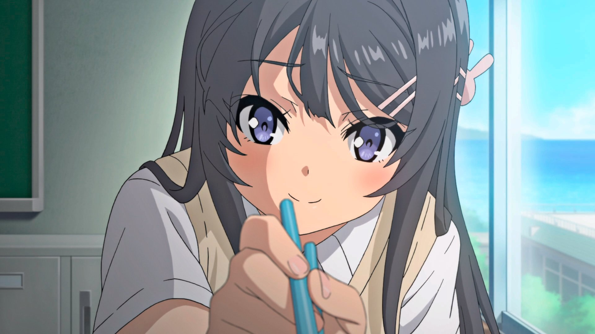
A 3rd year student at Minegahara High School. She is a well-known,
famous actress who is currently on hiatus. Because her life had always
revolved around her work in entertainment, she remains isolated at
school. She is serious and polite but has a strong will.
Number 2: Hisoka Morow
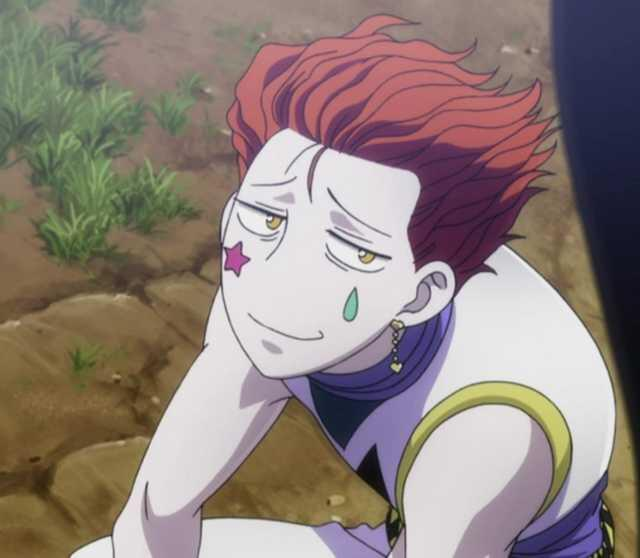
Notorious for his cruel and deceitful fighting ability, Hisoka has
proven to be deadly. His deviousness and volatility has made many
opponents have difficulty anticipating his next move, and this has led
to him winning many battles. Using Shu powered poker cards as his
primary weapon, he throws them with ease and deadly accuracy. Also, he
is very intrigued by Gon and the potential this young boy has to
become an adept and powerful adversary. Hisoka, ever looking for a
strong opponent, is willing to aid, or at least not defeat
prematurely, someone that could develop into a future opponent.
Number 3: Soma Yukihira

He is the son of Jouichirou Yukihira and, until it closed, worked at
his father's restaurant, Restaurant Yukihira. As one of the main
protagonist in the manga, Souma fight his odds in the elite school to
becoming the best chef in the world even with strong background
discrimination of his academy. He is currently a student at Tootsuki
Culinary Academy and a resident of Polar Star Dormitory.
Number 4: Yami Sukihiro
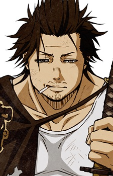
Yami is a large man with a muscular build, wild brown hair with the
front brushed back, small eyes, a mustache, stubs on his chin, and a
thick neck. He is also mostly seen smoking. Yami also wears a black
tattered cape with the black bull emblem on it and a strap around his
neck, over a white tanktop, along with a book belt around his waist,
black pants under light colored chaps, and black boot.
Number 5: Kurumi Tokisaki
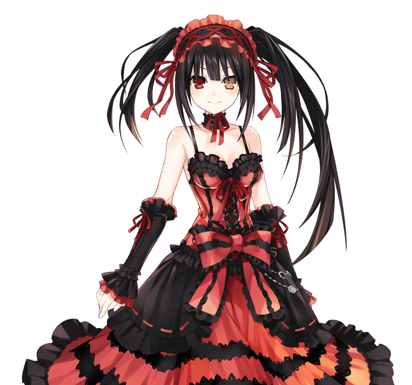
Kurumi Tokisaki is the main antagonist in the series. She is the third
Spirit to be encountered in the series and is the most dangerous and
lethal Spirit. She is heavily obsessed with Shidou and has the ability
to manipulate time. Her codename is Nightmare. She has a split
personality: that of a gentle, mysterious high school girl with a slow
talking pattern, and that of a psychopathic killer. Kurumi is very
aggressive in her actions which makes it harder for Shidou to capture
her.
Number 6: Gilgamesh
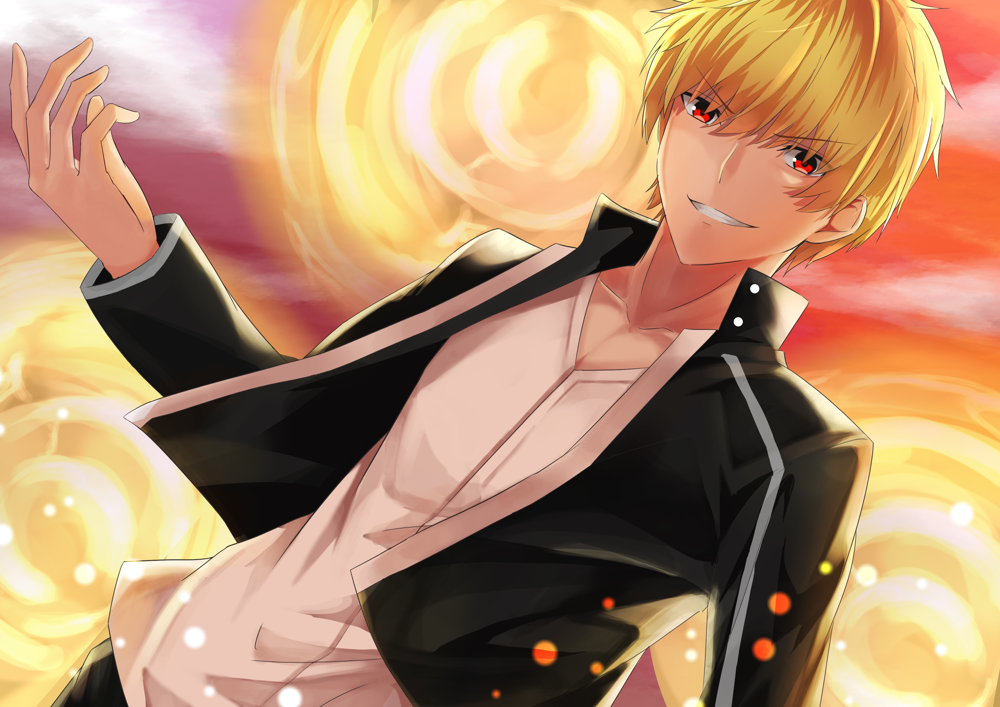
Gilgamesh is the great half-god, half-human king born from the union
between the King of Uruk, Lugalbanda, and goddess Rimat-Ninsun. He
ruled the Sumerian city-state of Uruk, the capital city of ancient
Mesopotamia in the B.C. era. He was an ultimate, transcendent being so
divine as to be two thirds god and one third human, and no others in
the world could match him. He was a despot possessing high divinity
who believed he was invincible.
Number 7: Violet Evergarden
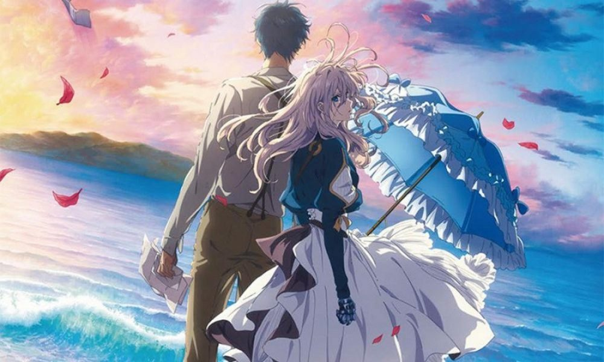
Violet is a newcomer Auto Memory Doll at the CH postal company. She
has wanted to know the meaning of "certain words" she received from
Gilbert when she was a soldier.
Number 8: Levi Ackerman
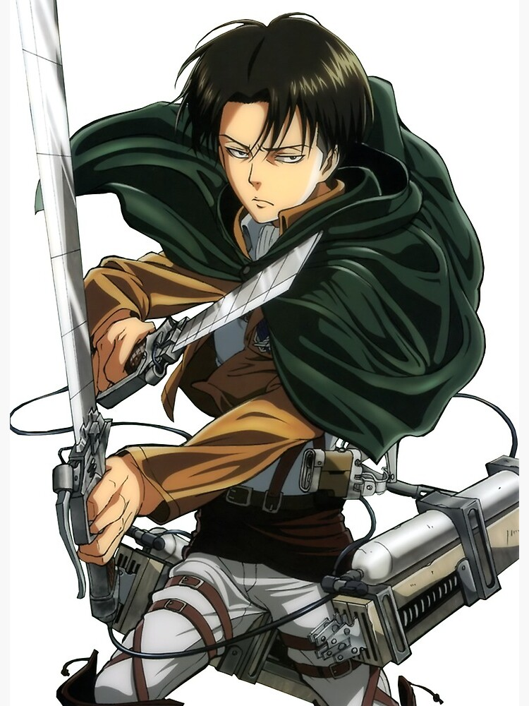
Levi is known as humanity's most powerful soldier. He's ranked as
Captain of the Scouting Legion division. Levi is also the leader of
the Special Operations Squad, an elite team that he hand-picked in
order to protect Eren Yeager. While it is said that he is blunt and
unapproachable, it is noted that he has a strong respect for structure
and discipline. There are rumors that he was originally part of
underground crime before he became a soldier. Although he often
appears to be unfriendly, he cares deeply for his team and has never
undervalued human life. He is also a notorious clean-freak.
Number 9: Kuroo
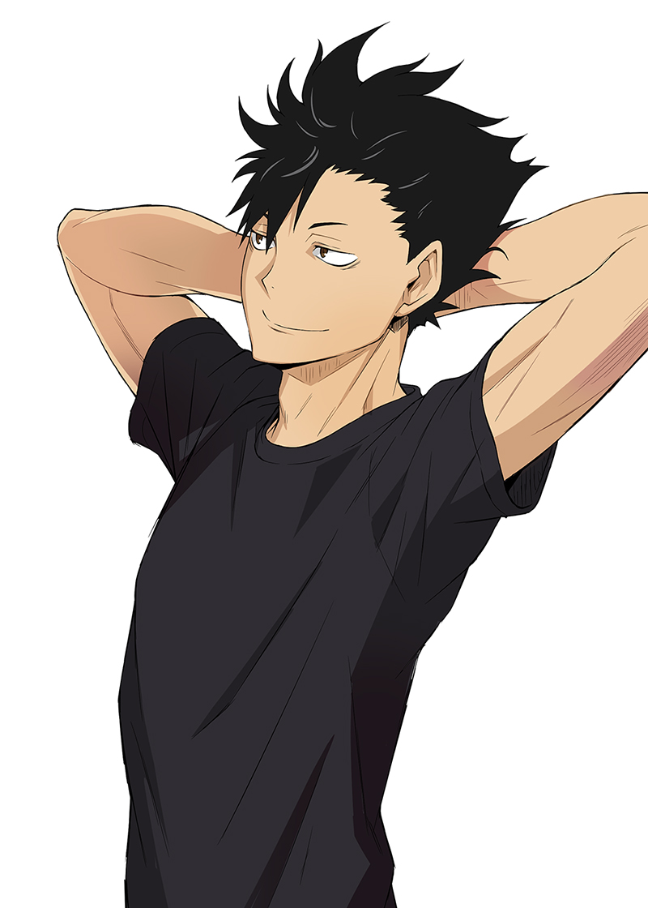
The captain of the Nekoma High School volleyball club. Kuroo has a
somewhat manipulative and cunning personality, but cares about his
friends and teammates very deeply. As Nekoma's captain, he has a sense
of responsibility and confidence. Even though Kuroo's a middle
blocker, he often uses offensive plays too.
Number 10: Mizuhara Chizuru
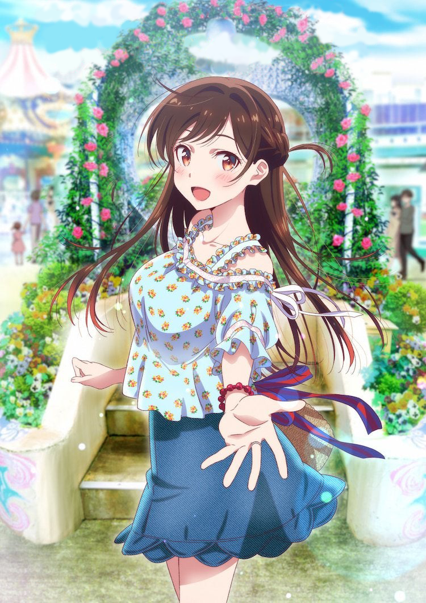
College student studying literature. She is beautiful has long
straight hair and works as a rental girlfriend for an app called
Diamond under the name Mizuhara (水原).
Number 1: Grand Blue

Iori Kitahara moves to the coastal town of Izu for his freshman year
at its university, taking residence above Grand Blue, his uncle's
scuba diving shop. Iori has high hopes and dreams about having the
ideal college experience, but when he enters the shop he is sucked
into the alcoholic activities of the carefree members of the Diving
Club who frequent the place. Persuaded by upperclassmen Shinji Tokita
and Ryuujirou Kotobuki, Iori reluctantly joins their bizarre party.
His cousin Chisa Kotegawa later walks in and catches him in the act,
earning Iori her utter disdain.
Number 2: Fate/stay night Unlimited bladeworks
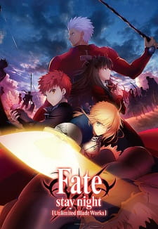
The Holy Grail War is a battle royale among seven magi who serve as
Masters. Masters, through the use of the command seals they are given
when they enter the war, command Heroic Spirits known as Servants to
fight for them in battle. In the Fifth Holy Grail War, Rin Toosaka is
among the magi entering the competition. With her Servant, Archer, she
hopes to obtain the ultimate prize—the Holy Grail, a magical artifact
capable of granting its wielder any wish.
Number 3: Re:creators
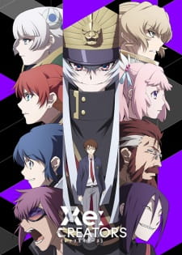
Humans have designed countless worlds—each one born from the unique
imagination of its creator. Souta Mizushino is a high school student
who aspires to be such a creator by writing and illustrating his own
light novel. One day, while watching anime for inspiration, he is
briefly transported into a fierce fight scene. When he returns to the
real world, he realizes something is amiss: the anime's headstrong
heroine, Selesia Yupitilia, has somehow returned with him.
Number 4: Hunter x Hunter

Hunter x Hunter is set in a world where Hunters exist to perform all
manner of dangerous tasks like capturing criminals and bravely
searching for lost treasures in uncharted territories. Twelve-year-old
Gon Freecss is determined to become the best Hunter possible in hopes
of finding his father, who was a Hunter himself and had long ago
abandoned his young son. However, Gon soon realizes the path to
achieving his goals is far more challenging than he could have ever
imagined.
Number 5: Violet Evergarden

The Great War finally came to an end after four long years of
conflict; fractured in two, the continent of Telesis slowly began to
flourish once again. Caught up in the bloodshed was Violet Evergarden,
a young girl raised for the sole purpose of decimating enemy lines.
Hospitalized and maimed in a bloody skirmish during the War's final
leg, she was left with only words from the person she held dearest,
but with no understanding of their meaning.
Number 6: Black clover

Asta and Yuno were abandoned at the same church on the same day.
Raised together as children, they came to know of the "Wizard King"—a
title given to the strongest mage in the kingdom—and promised that
they would compete against each other for the position of the next
Wizard King. However, as they grew up, the stark difference between
them became evident. While Yuno is able to wield magic with amazing
power and control, Asta cannot use magic at all and desperately tries
to awaken his powers by training physically.
Number 7: Fire Force

Spontaneous Human Combustion: a chaotic phenomenon that has plagued
humanity for years, randomly transforming ordinary people into
flaming, violent creatures known as Infernals. While Infernals make up
the first-generation accounts of Human Combustion, the second and
third generations became known as pyrokinetics—people gifted with the
ability to manipulate and control their flames while remaining human.
To combat the Infernal threat and discover the cause, the Tokyo Armed
Forces, Fire Defense Agency, and Holy Church of Sol produced their
answer: the Special Fire Force.
Number 8: Re:Zero kara Hajimeru Isekai Seikatsu

When Subaru Natsuki leaves the convenience store, the last thing he
expects is to be wrenched from his everyday life and dropped into a
fantasy world. Things aren't looking good for the bewildered teenager;
however, not long after his arrival, he is attacked by some thugs.
Armed with only a bag of groceries and a now useless cell phone, he is
quickly beaten to a pulp. Fortunately, a mysterious beauty named
Satella, in hot pursuit after the one who stole her insignia, happens
upon Subaru and saves him. In order to thank the honest and
kindhearted girl, Subaru offers to help in her search, and later that
night, he even finds the whereabouts of that which she seeks. But
unbeknownst to them, a much darker force stalks the pair from the
shadows, and just minutes after locating the insignia, Subaru and
Satella are brutally murdered.
Number 9: One Punch Man

The seemingly ordinary and unimpressive Saitama has a rather unique
hobby: being a hero. In order to pursue his childhood dream, he
trained relentlessly for three years—and lost all of his hair in the
process. Now, Saitama is incredibly powerful, so much so that no enemy
is able to defeat him in battle. In fact, all it takes to defeat
evildoers with just one punch has led to an unexpected problem—he is
no longer able to enjoy the thrill of battling and has become quite
bored.
Number 10: Demon Slayer

Ever since the death of his father, the burden of supporting the
family has fallen upon Tanjirou Kamado's shoulders. Though living
impoverished on a remote mountain, the Kamado family are able to enjoy
a relatively peaceful and happy life. One day, Tanjirou decides to go
down to the local village to make a little money selling charcoal. On
his way back, night falls, forcing Tanjirou to take shelter in the
house of a strange man, who warns him of the existence of flesh-eating
demons that lurk in the woods at night.